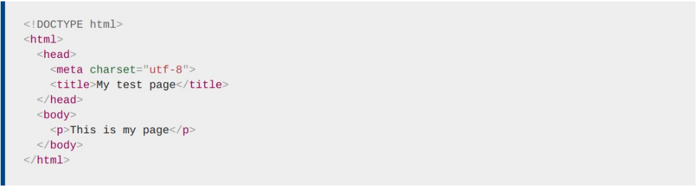
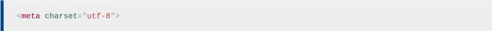

Revisemos el documento HTML que mencionamos párrafos atrás:
El encabezado HTML esel contenido del elemento <head>, a diferencia del contenido del elemento <body> este no se muestra en la página. En cambio, su tarea es contener metadatos sobre el documento.
En el ejemplo anterior, la cabecera es bastante pequeña, sin embargo, en paginas mas grandes, puede llenarse bastante. Nuestro objetivo no es mostrar cómo usar todo lo que posiblemente se pueda poner en la cabecera, sino mas bien enseñarte a cómo usar los elementos principales que querrá incluir y darle algo de familiaridad.
Ya hemos visto el elemento <title> en acción. Esto se puede usar para agregar un título al documento. Sin embargo, esto puede confundirse con el elemento <h1>, que se usa para agregar un encabezado de nivel superior al contenido de su cuerpo, esto a veces también se conoce como el título de la pagina. ¡Pero son cosas diferentes!
Los contenidos de los elementos <title> también se utilizan de otras formas. Por ejemplo, si intenta marcar la página, verá el contenido de <title> completado con el nombre de marcador sugerido. También son utilizados en los resultados de búsqueda.
Los metadatos son datos que describen datos, y HTML tiene una forma "oficial" de agregar metadatos a un documento: el elemento <meta>.
En el ejemplo que vimos arriba, se incluyó esta línea:
Si configura la codificación de caracteres en ISO-8859-1, por ejemplo (el juego de caracteres para el alfabeto latino), la representación de su página puede parecer desordenada:
Descargar PDF